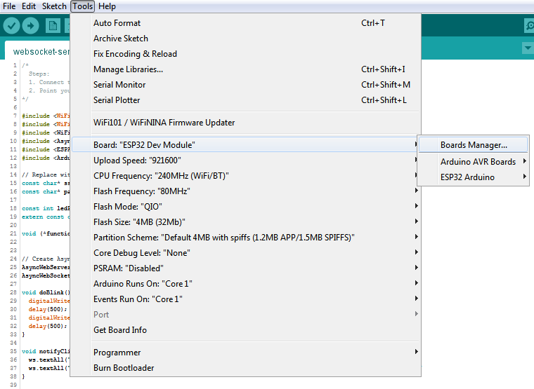
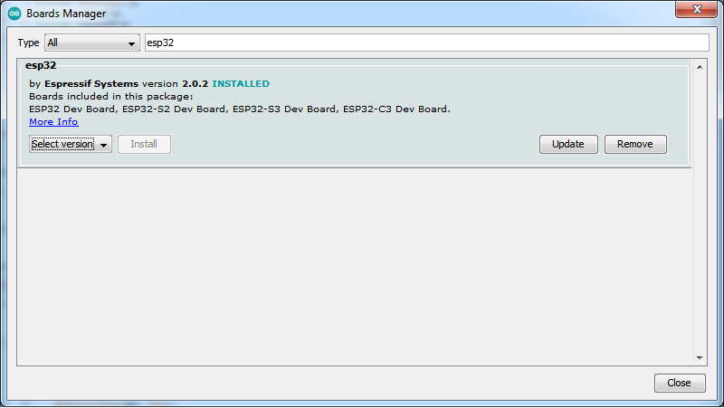
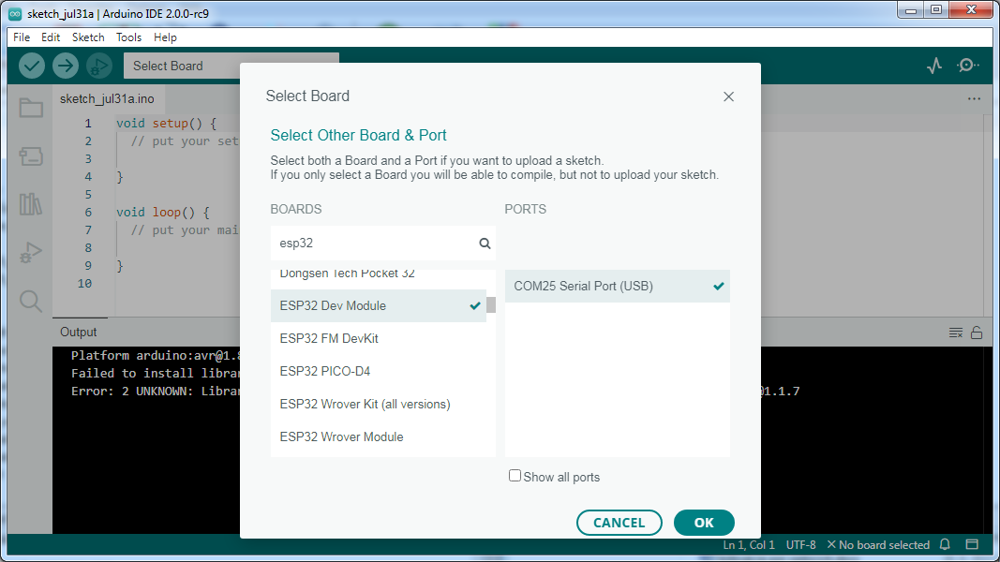
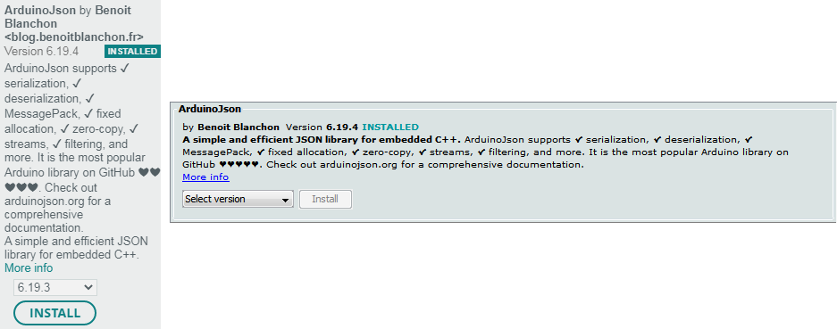
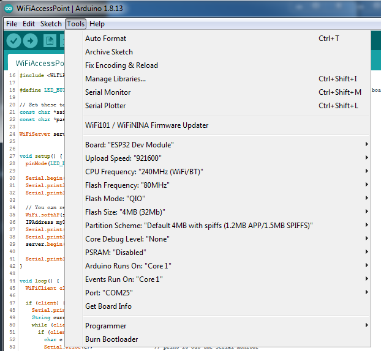
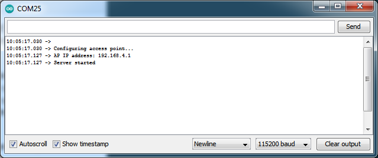

Prvý program, nastavenie IDE¶
V tejto časti opíšeme to, ako nastaviť Arduino IDE, ktoré knižnice si stiahnuť, ako spustiť prvý program a také.
Arduino IDE¶
Na programovanie ESPčka budeme používať Arduino IDE. Stiahnuť si ho môžete napríklad na oficiálnej stránke Arduina. Marcel používal v1.8.19 a táto verzia má menej features, Krto sa nebál pre-released v2.0, ale ešte to nie je stabilná verzia, tak asi je to na vás.
Najprv si potrebujete nainštalovať ESP32 dosku a knižnice.
Inštalácia ESP32 dosky¶
Otvorte si Board Manager. Pre v1.* vyzerá zhruba takto:
a počkajte, kým si dotiahne updaty z internetu.
Následne dajte hľadať dosku esp32 a nainštalujte si ho. Marcelovi fungovala iba v2.0.2, s novšími mal problémy.
Verzia 2.0 by ho mala otvoriť hneď na začiatku a teda vyberiete ESP32.
Inštalácia potrebných knižníc¶
Potrebujete si stiahnuť tieto knižnice:
ESPAsyncWebServer. Je tiež aj
v tomto repozitári.AsyncTCP Je tiež aj
v tomto repozitári.ArduinoJson. Táto knižnica sa dá stiahnuť cez Library Manager a nemusíte ju sťahovať ako .zip.
ArduinoJson vľavo pre v2, vpravo pre v1.*
V prípade, že sa vám nepodarí spustiť kód pre ESP32, a bude vám hlásiť, že to nepozná analogWrite, tak potrebujete si ešte stiahnuť knižnicu na analogWrite, napríklad túto. Tiež je stiahnutá
v tomto repozitári.
Nastavenie dosky¶
Pre nás fungovalo nasledovné nastavenie dosky:
Malo by stačiť nastaviť správny Board na ESP32 Dev Module a zvyšok sa nastavil sám. Budete si musieť nastaviť Port na ten, kde bude ESPčko reálne pripojené (proste vám to ponúkne zhruba jedinú možnosť a vy u vyberiete).
Spustenie prvého programu¶
V Arduino IDE si otvoríte (File -> Open) hocijaký súbor z priečinka websocket_server. IDE otvorí všetky súbory (na kartách hore), ktoré sú v tomto priečinku a následne pri kompilovaní a nahrávaní kódu do ESPčka spojí všetky súbory, ktoré sú v tomto priečinku do jedného veľkého súboru.
Popíšme teraz súbory, ktoré sa v priečinku nachádzajú:
Súbor
websocket_server.inoobsahuje funkcie, ktoré ovládajú server, wifi, a podobne. Jediná vec, ktorú by ste v tomto súbore mali za normálnych okolností meniť je názov wifi a heslo k nej.Súbor
index.inoobsahuje jedinú stringovú premennú, ktorá obsahuje html stránky, ktorou sa ovláda ESPčko. Je v samostatnom súbore, aby sa dala rozumne otvoriť v nejakom editore, ktorý vie zvýrazňovať html syntax, aby sa s tým rozumnejšie pracovalo (ak neviete, čo to znamená, a prečo by ste to tak chceli robiť, alebo tak, tak s tým samozrejme môžete pracovať čisto v Arduino IDE).Súbor
handleMessage.inoobsahuje funkciu, ktorá sa zavolá vždy potom, ako server (ESPčko) prijíme cez websocker nejakú správu od klienta (mobilu), napríklad stlačenie tlačítka, posunutie slidru, a podobne.Okrem toho, je tento súbor odporúčané miesto, kam by ste mohli chcieť dávať funkcie, ktoré chcete volať z diaľkového ovládania robota (mobilu). Obsahuje tiež pole týchto funkcií (viac o tom v časti ESP32)
Súbor
checkInputs.inoobsahuje pole portov, ktoré slúžia ako vstupné porty. Obsahuje funkciu na počiatočné nastavenie týchto portov ako vstupné a funkciu na poslanie hodnoty portov do klienta (mobilu). (Opäť viac o tom v časti ESP32.)
Pre začiatok v kóde zmeňte jedinú vec: v súbore websocket_server na riadkoch 13 a 14 názov vašej wifi (premenná ssid) a heslo k nej (premenná password). Heslo asi chce mať viac ako 8 znakov a meno chce byť unikátne voči ostatným družinkám. Po pripojení ESPčka, vybratí správneho portu, a urobení všetkých vecí v časti vyššie môžete tlačítkom Upload program nahrať do espčka.
Tento upload Marcelovi vo v1.8 trval trochu dlhšie (čítaj: tak 1-2 minúty), takže počas neho si môžete vpravo hore otvoriť Serial monitor.
Po spustení by mala začať svietiť LEDka na ESPčku, a na Serial monitore by sa malo objaviť niečo takéto:
Teraz si zoberte mobil/notebook/niečo a nájdite wifi s názvom aký ste nastavili a pripojte sa k nej. Mobil/notebook bude možno protestovať, že táto sieť nemá internet, ale odkliknite, že je to v pohode, aj tak k nej chcete ostať pripojený.
Teraz si otvorte váš obľúbený rozumne moderný browser (napríklad chrome/firefox je celkom v pohode),
a otvorte 192.168.4.1 (to je adresa ESPčka).
Zobrazí Vám jeden slider, ktorý ovláda port 22. Zobrazia sa vám tiež dve tlačítka, jedno ovláda port 22 a druhé spúšťa nejakú funkciu.
Teraz keď ťukáte na tlačítko, ktoré ovláda port, tak by sa mala ledka na ESPčku zapínať a vypínať.
V prípade, že ťuknete na tlačítko, ktoré spúšťa funkciu, tak by sa mala ledka na chvíľu rozsvietiť a zhasnúť.
V prípade, že posúvate sliderom, tak by sa mala ledka na ESPčku postupne rozsvecovať a zhasínať. (Ak už LEDku raz ovládate slidrom, do reštartu espčka ju neviete ovládať tlačítkom, pozri Known issues)
Krátky tutoriál / Hello world¶
TODO